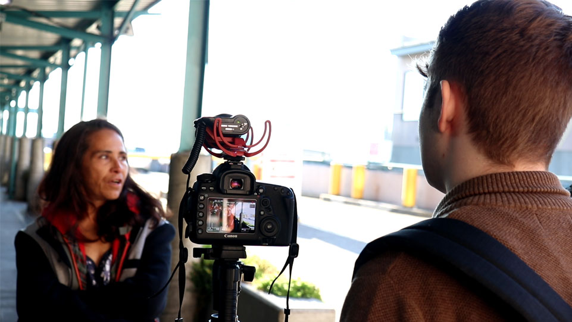

Invisible is a Two-Part Mini-Documentary Series focused on displaying the two sides of homelessness. While five homeless people are shown within the Documentary, just two people become the focus; exemplifying the two different sides to the homeless story.
 The Photo That Inspired It All
The Photo That Inspired It All
During a summer night in 2017 I was walking alone at night in Downtown Seattle with my camera. I stumbled across this homeless man. His message was strong enough to warrant a photo, especially since nobody else payed attention to him. I saw him again during the following nights, holding new signs with increasing detail and color, likely in a fruitless attempt to get someone to look. I originally was going to interview him first for the Documentary, but unfortunatelty he dissapeared before the Documentary commenced filming.
Below are a few (of many) places you can donate to, ensuring the homeless have the resources they need.
Mary's Place - For Children and Women
Redeeming Soles - Providing Access To Footwear
Seattle's Union Gospel Mission - One of the only resources specifically for Men
Below is my PayPal "tip jar". I am an 18 year old filmmaker who's moving to LA to pursue a career in Filmmaking, so any donation helps immensely. All money donated goes towards future productions. I make these films completely on my own, but with enough donations and savings i'll be able to get some help.Please prioritize donating to the homeless foundations listed above, before me.
CREDITS:
Directed, Written, Edited, Produced by: Hayden Quinn
Custom Music: Nicholas DeAngelis
Homeless Shown:
"Raven"
Sean
"June"
 Crystal
Crystal
Missy (Crystal's Dog & Bodyguard)
(Name Withheld)